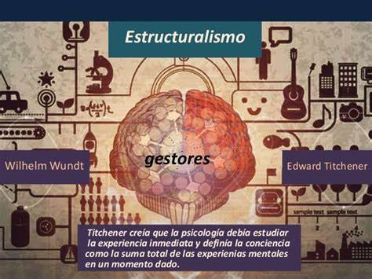

Estructuralismo
El estructuralismo es una corriente teórica y metodológica en las ciencias sociales y humanidades que surgió a mediados del siglo XX. Asociado principalmente con la antropología de Claude Lévi-Strauss, el estructuralismo sostiene que las culturas humanas se pueden entender mejor examinando las estructuras subyacentes que las organizan, más que observando sus elementos individuales aislados. Aquí se presenta una visión detallada del estructuralismo y su impacto en la antropología y otras disciplinas.
Principios del Estructuralismo
1. Estructuras Subyacentes: El estructuralismo se enfoca en las estructuras profundas que organizan y dan forma a las prácticas culturales, mitos, lenguajes y sistemas sociales. Estas estructuras son universales y pueden ser descubiertas a través del análisis comparativo.
2. Binarios y Contrastes: Lévi-Strauss propuso que las culturas humanas tienden a pensar en términos de oposiciones binarias (por ejemplo, crudo/cocido, vida/muerte, naturaleza/cultura). Estas oposiciones estructuran el pensamiento y las prácticas culturales.
3. Lenguaje como Modelo: Influenciado por el lingüista Ferdinand de Saussure, Lévi-Strauss y otros estructuralistas ven el lenguaje como un modelo para entender la cultura. Así como las palabras obtienen su significado a través de su relación con otras palabras, los elementos culturales obtienen su significado a través de su relación dentro de un sistema.
4. Inconsciente Cultural: Las estructuras culturales operan a menudo a nivel inconsciente, moldeando las prácticas y creencias de las personas sin que ellas necesariamente lo reconozcan.
Estructuralismo en Antropología
Claude Lévi-Strauss es la figura más destacada del estructuralismo en antropología. Sus trabajos más influyentes incluyen:
Mitos y Mitologías: En su serie de libros "Mitológicas", Lévi-Strauss analiza mitos de diferentes culturas para descubrir las estructuras universales subyacentes. Argumenta que los mitos, aunque variados en contenido, siguen patrones estructurales similares que reflejan el pensamiento humano universal.
Parentesco y Matrimonio: En "Las estructuras elementales del parentesco", Lévi-Strauss examina las reglas de parentesco y matrimonio en diversas culturas, argumentando que estas reglas están organizadas por estructuras inconscientes que aseguran la cohesión social y la continuidad cultural.
Conclusión
El estructuralismo ha sido una influencia poderosa en la antropología, la lingüística, la literatura y otras disciplinas, proporcionando un marco para analizar las culturas humanas a través de sus estructuras subyacentes. Aunque ha sido objeto de críticas, su enfoque en las estructuras universales y los patrones inconscientes ha ofrecido una perspectiva valiosa para comprender la cultura y el pensamiento humano.
Representación

Video
Bibliografía
- Lévi-Strauss, C. (1962). La pensée sauvage. Plon.